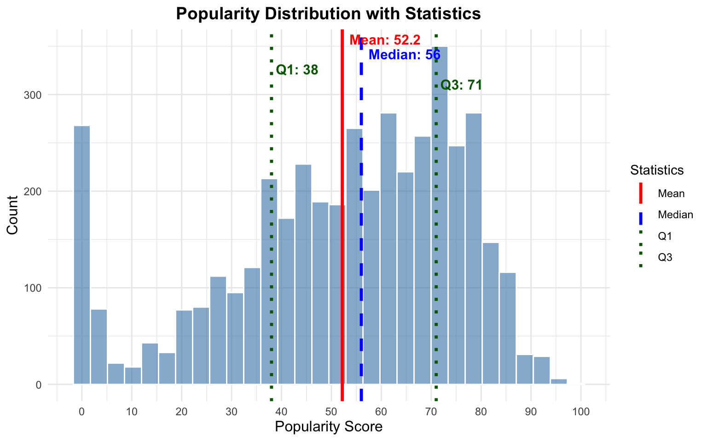
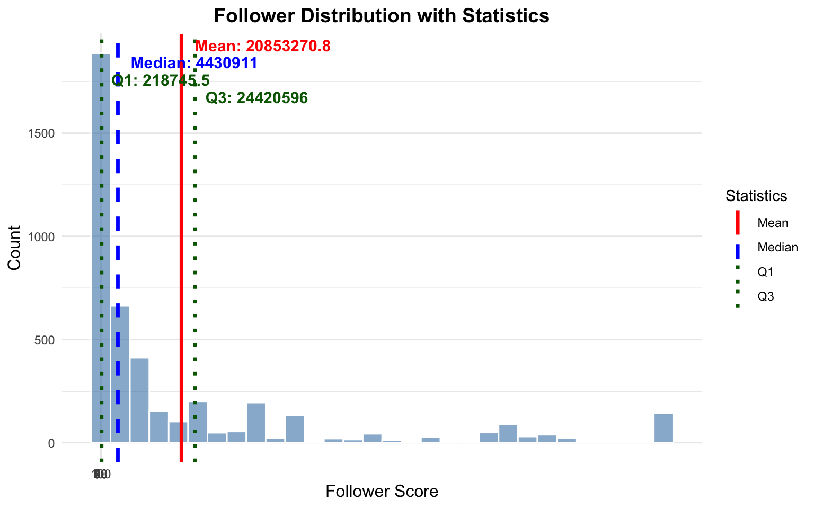
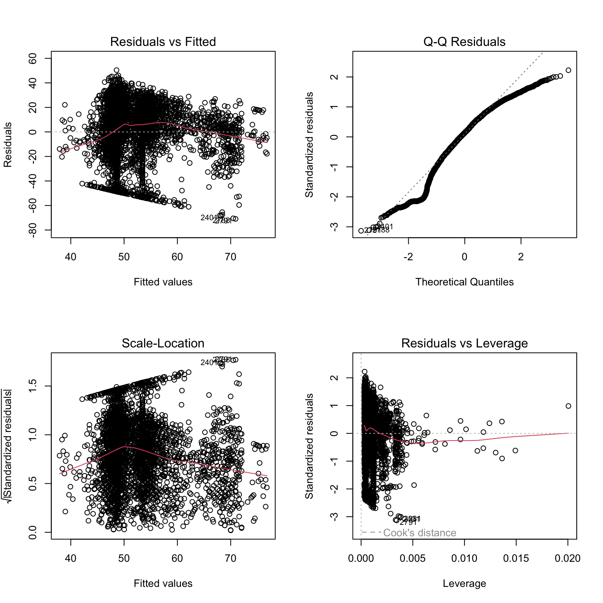

Linear regression is one of the most widely used statistical methods for several reasons. First, in the broader scheme of statistical techniques, linear regression is relatively straightforward – as well as foundational – to understand more complex methods. It’s an ideal starting point to learn more advanced techniques.
Second, linear regression is used in a variety of contexts. It’s invaluable for descriptive analysis – describing the relationship between variables in a sample. It’s useful for exploratory data analysis – identifying potential realtionships or patterns in the data. It’s essential for inference as well – describing the relationship between variables in a population, based on a sample. It is routinely used in hypothesis testing and predictive modeling.
Linear regression is applicable in many contexts, helping us distill complex relationships between “observed” and “experimental” data. The technique is used to estimate the (linear) relationships between two or more variables. At its core, linear regression follows this form.
The linear model follows this basic functional form.
\(y_i\)=\(\alpha\)+\(\beta x_i\)
\(\alpha\) represents the intercept. The point at which the regression line crosses the \(y\) axis, or equivalently, the value of \(y\) when \(x=0\).
\(\beta\) represents the slope, the change in \(y\) for every unit change in \(x\). And more formally,
\(\partial y / \partial x=\beta\)
Because the relationship between \(x\) and \(y\) is imperfect – stochastic rather than deterministic – we add an error term, \(\epsilon_i\).
\[y_i=\alpha+\beta x_i+\epsilon_i\]
\(\epsilon_i\) represents the errror term. Often, we’ll often assume that \(\epsilon_i \sim N(0, \sigma^2)\), normally distributed with mean zero and constant variance \(\sigma^2\).
In this example, \(y\) is an outcome, or endogeneous variable, whereas \(x_i\) is a predictor, or exogeneous variable. If we have multiple predictors, we could write the equation as:
And the key question to address is what is the expected value of \(y\) given \(x_1, x_2, ..., x_k\)?. In repeated samples, what is the expected value of \(y\) given fixed values \(x_1, x_2, ..., x_k\)?
In this class, we’ll derive the OLS estimator, one approach to estimate the parameters \(alpha\) and \(b_k\). The key to linear regression is to typically just write out the model. Yet writing and estimating a linear equation does not mean the model is correct or accurate. The reasons are multifaceted. First, confounding may be a concern. Let’s say \(x\) may be related to \(y\), but there is a common variable , \(u\), that affects scores on both \(x\) and \(y\). The linear regression – as just a statistical procedure – can be defined to estimate the wrong relationships. In this case, \(x \not\perp y | u\).
Second, there is the concern of ** exogeneity and causation.** Linear regression is a mathematical procedure. It doesn’t inherently allow one to make a causal statement. The slopes are intimately related to the correlation coefficient. For the same reason that correlated variables do not imply a causal relationship, the slope parameters in a linear regression also do not imply causality.
Third, there the issue off indirect effects and mediation, a process based argument.\(x\) may be related to \(y\), due to the intervening mechanisms \(z\), so \(x \rightarrow z \rightarrow y\). A relationship may be indirect. It is difficult to sort these out using a regression model. In most applications, we observe the outcome of a process. It is often difficult to make claims about the process itself.
Linear regression is a technique to estimate the relationships between multiple variables. A slope represents a change in y for a unit change in x. The quality of these estimates depend on multiple things, including accurate measurement, correct model specification, and no confounding. Linear regression, like many statistical approaches, relies on several strong assumptions, which we’ll examine in this class.
2.2lm
2.2.1 An Example with Spotify Data
We’ll use a number of data sets in this class. Let’s start out with a public one, Spotify music data. These public data include song popularity in 2025. The data include track, artist, and album level information. The data are freely available for download on kaggle.com and are saved in the class Github repository.
In order to load a package in R, it is necessary to install that package. Most packages are available on CRAN or Github.
install.packages("tidyverse")
After installation, the package can be loaded into memory in subsequent R sessions.
load(tidyverse)
tidyverse is a collection of packages that all follow a similar structure. If we use library(tidyverse) all these packages are available in the R session. You can find a number of useful cheatsheets here, https://posit.co/resources/cheatsheets/
Typically, it’s best to only load those packages that are being used, as loading too many packages can lead to conflicts. Like, if two packages use the same name for a function, R will only evaluate the one most recently loaded. This can cause code to break, and a lot of frustration, so it’s best to only load those packages that are needed..
There’s a lot in these data. Let’s just explore a simple relationship – what predicts the popularity of a music track? There are a few variables to examine
track_popularity: Popularity of the track (0-100)
explicit: TRUE/FALSE indicating whether the track has explicit content
track_number: Track number on the album
artist_followers: Number of followers of the artist
Research Questions
Is there a relationship between the number of followers an artist has and the popularity of their tracks?
Does the track number on an album influence its popularity? Do popular tracks appear earlier in an album
Does explicit content affect track popularity?
ggplot is commonly used for graphics in R. ggplot adopts a syntax in which aesthetic characteristics are updated and modified through the + operator. The first layer defines the data and relevant variables. The subsequent geom() layers describe what to plot. The remaining layers style the axes, change fonts, and so forth. See https://ggplot2.tidyverse.org/
library(ggplot2)library(dplyr)dat <-suppressWarnings(spotify_data |>mutate(track_popularity =as.numeric(track_popularity),artist_followers =as.numeric(artist_followers),explicit =ifelse(explicit ==TRUE, 1, 0),track_number =as.numeric(track_number) ) |>filter(!is.na(track_popularity)))mean_val <-mean(dat$track_popularity, na.rm =TRUE)median_val <-median(dat$track_popularity, na.rm =TRUE)q1_val <-quantile(dat$track_popularity, 0.25, na.rm =TRUE)q3_val <-quantile(dat$track_popularity, 0.75, na.rm =TRUE)ggplot(dat, aes(x = track_popularity)) +geom_histogram(bins =30, alpha =0.6, fill ="steelblue", color ="white") +geom_vline(aes(xintercept = mean_val, color ="Mean"), linewidth =1.2, linetype ="solid") +geom_vline(aes(xintercept = median_val, color ="Median"), linewidth =1.2, linetype ="dashed") +geom_vline(aes(xintercept = q1_val, color ="Q1"), linewidth =1.2, linetype ="dotted") +geom_vline(aes(xintercept = q3_val, color ="Q3"), linewidth =1.2, linetype ="dotted") +annotate("text", x = mean_val, y =Inf, label =paste0("Mean: ", round(mean_val, 1)),vjust =1.5, hjust =-0.1, color ="red", size =4, fontface ="bold") +annotate("text", x = median_val, y =Inf, label =paste0("Median: ", round(median_val, 1)),vjust =3, hjust =-0.1, color ="blue", size =4, fontface ="bold") +annotate("text", x = q1_val, y =Inf, label =paste0("Q1: ", round(q1_val, 1)),vjust =4.5, hjust =-0.1, color ="darkgreen", size =4, fontface ="bold") +annotate("text", x = q3_val, y =Inf, label =paste0("Q3: ", round(q3_val, 1)),vjust =6, hjust =-0.1, color ="darkgreen", size =4, fontface ="bold") +scale_color_manual(values =c("Mean"="red", "Median"="blue", "Q1"="darkgreen", "Q3"="darkgreen")) +scale_x_continuous(breaks =seq(0, 100, 10)) +labs(title ="Popularity Distribution with Statistics",x ="Popularity Score",y ="Count",color ="Statistics") +theme_minimal() +theme(plot.title =element_text(hjust =0.5, size =14, face ="bold"),axis.title =element_text(size =12))

library(ggplot2)library(dplyr)mean_val <-mean(dat$artist_followers, na.rm =TRUE)median_val <-median(dat$artist_followers, na.rm =TRUE)q1_val <-quantile(dat$artist_followers, 0.25, na.rm =TRUE)q3_val <-quantile(dat$artist_followers, 0.75, na.rm =TRUE)ggplot(dat, aes(x = artist_followers)) +geom_histogram(bins =30, alpha =0.6, fill ="steelblue", color ="white") +geom_vline(aes(xintercept = mean_val, color ="Mean"), linewidth =1.2, linetype ="solid") +geom_vline(aes(xintercept = median_val, color ="Median"), linewidth =1.2, linetype ="dashed") +geom_vline(aes(xintercept = q1_val, color ="Q1"), linewidth =1.2, linetype ="dotted") +geom_vline(aes(xintercept = q3_val, color ="Q3"), linewidth =1.2, linetype ="dotted") +annotate("text", x = mean_val, y =Inf, label =paste0("Mean: ", round(mean_val, 1)),vjust =1.5, hjust =-0.1, color ="red", size =4, fontface ="bold") +annotate("text", x = median_val, y =Inf, label =paste0("Median: ", round(median_val, 1)),vjust =3, hjust =-0.1, color ="blue", size =4, fontface ="bold") +annotate("text", x = q1_val, y =Inf, label =paste0("Q1: ", round(q1_val, 1)),vjust =4.5, hjust =-0.1, color ="darkgreen", size =4, fontface ="bold") +annotate("text", x = q3_val, y =Inf, label =paste0("Q3: ", round(q3_val, 1)),vjust =6, hjust =-0.1, color ="darkgreen", size =4, fontface ="bold") +scale_color_manual(values =c("Mean"="red", "Median"="blue", "Q1"="darkgreen", "Q3"="darkgreen")) +scale_x_continuous(breaks =seq(0, 100, 10)) +labs(title ="Follower Distribution with Statistics",x ="Follower Score",y ="Count",color ="Statistics") +theme_minimal() +theme(plot.title =element_text(hjust =0.5, size =14, face ="bold"),axis.title =element_text(size =12))

lm(track_popularity ~ artist_followers + explicit +as.numeric(track_number), data = dat) |>summary()
Call:
lm(formula = track_popularity ~ artist_followers + explicit +
as.numeric(track_number), data = dat)
Residuals:
Min 1Q Median 3Q Max
-70.927 -12.532 3.163 17.276 50.417
Coefficients:
Estimate Std. Error t value Pr(>|t|)
(Intercept) 4.892e+01 5.158e-01 94.832 < 2e-16 ***
artist_followers 1.606e-07 1.003e-08 16.006 < 2e-16 ***
explicit 4.744e+00 8.155e-01 5.817 6.41e-09 ***
as.numeric(track_number) -2.259e-01 6.169e-02 -3.662 0.000253 ***
---
Signif. codes: 0 '***' 0.001 '**' 0.01 '*' 0.05 '.' 0.1 ' ' 1
Residual standard error: 22.68 on 4362 degrees of freedom
(1 observation deleted due to missingness)
Multiple R-squared: 0.06962, Adjusted R-squared: 0.06898
F-statistic: 108.8 on 3 and 4362 DF, p-value: < 2.2e-16
I regularly use |> known as a pipe operator. Values to the left are passed to the right. For instance, say you have a variable in your R script` where you subtract the mean then sample 100 values from the data.
The native R pipe operator is: |>, and there is another in tidyr, %>%. Both work similarly. If we want to apply a function to data,
data |> function()
This is equivalent to:
function(data)
The problem is code gets unreadable if we apply nested functions
function1(function2(data))
The pipe operator allows us to write this in a more readable manner:
data |> function1() |>
function2()
In this example, \(b_0 = 48.92\), \(b_{artist\_followers} = 1.61 \times 10^{-7}\), \(b_{explicit} = 4.74\), and \(b_{track\_number} = -0.23\). The substantive interpretation follows.
Artists that have more followers and release tracks with explicit content are more likely to have popular tracks. For track_number the coefficient is negative, indicating that tracks released earlier in an album are more popular; tracks released later on the album tend to be less popular. The linear regression estimates also allow for hypothesis tests. The \(t-values\) (\(b/se\)) amd associated p-values provide evidence suggesting that we might reject the null hypothesis \(H_0: b_i = 0\) for all three predictors.
These coefficients can also be interpreted directly. For every unit increase in \(x\) there is a \(b\) unit change in \(y\). Let’s consider the explicit variable. Here the coefficient is 4.74. Let’s piece this together. Let’s predict the average popularity at the average level of followers (\(\bar{x} = 16.85\)). This value is logged, so the average number of followers is \(e^{16.85} \approx 20790361\). Let’s fix track number at 2.
x =expand.grid(artist_followers =16.85,explicit =c(0, 1),track_number =2)lm(track_popularity ~ artist_followers + explicit +as.numeric(track_number), data = dat) |>predict(newdata = x)
1 2
48.46481 53.20891
The difference between these two predictions is -2.64. The coefficient indicates what happens changing explicit one unit. The variable is binary, so one-unit simply means the effect of going from non-explicit to explicit content.
2.3 Anatomy of lm
The lm() function in R is the workhorse for fitting linear models. Understanding its structure and components is essential for working effectively with regression analysis in R.
2.3.1 Basic Syntax
The syntax is largely interchangeable with other statistical models in R: lm(formula, data, ...).
The formula always follows the form dv ~ iv1 + iv2 + ..., where: - dv is the dependent variable (outcome) - iv are independent variables (predictors) - ~ means “is modeled as” or “is a function of” - + adds additional predictors
The data argument specifies the data frame containing the variables.
2.3.2 Components of an lm Object
When you run lm() and save the output to an object, that object – an lm object – contains numerous components that store different aspects of the regression analysis. You can explore these with names() or ls() and access them with $.
# Fit a model and save itmodel <-lm(track_popularity ~ artist_followers + explicit +as.numeric(track_number), data = dat)# List all componentscat("Components of the lm object:\n")
Residual degrees of freedom (\(n - k\), where \(n\) is sample size and \(k\) is number of parameters):
cat("Residual degrees of freedom:", model$df.residual, "\n")
Residual degrees of freedom: 4362
cat("Sample size:", nobs(model), "\n")
Sample size: 4366
cat("Number of parameters:", length(model$coefficients), "\n")
Number of parameters: 4
2.3.3 Extracting More Information with Helper Functions
Beyond the direct components, several functions extract useful information:
2.3.3.1summary() - Comprehensive Model Summary
summary(model)
Call:
lm(formula = track_popularity ~ artist_followers + explicit +
as.numeric(track_number), data = dat)
Residuals:
Min 1Q Median 3Q Max
-70.927 -12.532 3.163 17.276 50.417
Coefficients:
Estimate Std. Error t value Pr(>|t|)
(Intercept) 4.892e+01 5.158e-01 94.832 < 2e-16 ***
artist_followers 1.606e-07 1.003e-08 16.006 < 2e-16 ***
explicit 4.744e+00 8.155e-01 5.817 6.41e-09 ***
as.numeric(track_number) -2.259e-01 6.169e-02 -3.662 0.000253 ***
---
Signif. codes: 0 '***' 0.001 '**' 0.01 '*' 0.05 '.' 0.1 ' ' 1
Residual standard error: 22.68 on 4362 degrees of freedom
(1 observation deleted due to missingness)
Multiple R-squared: 0.06962, Adjusted R-squared: 0.06898
F-statistic: 108.8 on 3 and 4362 DF, p-value: < 2.2e-16
The summary includes: - Coefficient estimates with standard errors - t-statistics and p-values - \(R^2\) and Adjusted \(R^2\) - F-statistic for overall model significance - Residual standard error
This decomposes the variation explained by each predictor sequentially.
2.3.4 Diagnostic Plots
The plot() function produces four diagnostic plots for model checking. These plots are essential for assessing whether the assumptions of linear regression are met. Let’s examine each plot and what to look for:
par(mfrow =c(2, 2))plot(model)

par(mfrow =c(1, 1))
2.3.4.1 Plot 1: Residuals vs Fitted
What the Plot Shows: The residuals (\(e_i = y_i - \hat{y}_i\)) plotted against the fitted (predicted) values (\(\hat{y}_i\)).
Linearity: The points should be randomly scattered around the horizontal line at zero. If you see a pattern (e.g., curved, U-shaped), this suggests the relationship between X and Y may not be linear.
Homoscedasticity (Constant Variance): The spread of residuals should be roughly constant across all fitted values. If the spread increases or decreases systematically (forming a funnel or cone shape), this indicates heteroscedasticity.
Independence: Points should not show systematic patterns. Any pattern suggests the model is missing something important.
2.3.4.2 Plot 2: Normal Q-Q (Quantile-Quantile)
What it shows: Compares the standardized residuals to what we’d expect if they were normally distributed.
Normality: Points should fall approximately along the diagonal reference line. This line represents perfect normality. Just look for a 45 degree angle and line running from the lower left to upper right. Deviations from normality are observed from this line.
Deviations: Small deviations at the extremes are common and usually acceptable. Large deviations indicate non-normality.
Heavy tails: If points curve away from the line at both ends suggest heavy-tailed distributions (more extreme values than expected).
Skewness: Points systematically above or below the line suggest skewed distributions.
2.3.4.3 Plot 3: Scale Location
What it shows: The square root of standardized residuals plotted against fitted values. This is another way to check for homoscedasticity.
Constant variance: The red smoothed line should be approximately horizontal, and the spread of points should be constant.
Heteroscedasticity detection: An upward or downward trend in the red line, or increasing/decreasing spread, indicates heteroscedasticity.
2.3.4.4 Plot 4: Influence
What it shows: Standardized residuals plotted against leverage, with Cook’s distance contours. This identifies influential observations.
Key concepts:
Leverage measures how far an observation’s predictor values are from the mean. High leverage points have unusual X values.
Residuals measure how far an observation’s Y value is from the predicted value. Large residuals indicate unusual Y values.
Cook’s Distance combines leverage and residuals to measure overall influence. Points outside the Cook’s distance contours (dashed lines) are highly influential.
2.4 Breaking Things Down
A statistical model – say linear equation – can be used to estimate the relationships between variables in a data set. It can be used descriptively to quantify the strength of a relationship between two variables, perhaps controlling for additional variables. The procedure can also be extended inferentially to test hypotheses regarding inferences between sample data and the population from which the data are drawn.
Always consider the data generating process (DGP). Write a mathematical model, perhaps representing some process process. For instance, \(y=\alpha + \beta x\). For every unit change in x, we observe a \(\beta\) unit change in \(y\). In this case, \(\alpha\) is just a constant, representing the point at which the linear equation crosses the y axis, or equivalently, the value of \(y\) when \(x\) is zero.
In some cases, \(x\) can be manipulated. We know the process generating different values of \(x\). In an experiment – say a drug trial – \(x\) is assigned (in the form of assignment to the treatment or control, and/or levels of the control. If we do not know, or purport to know, the factors that lead to \(x\), we would say the data are observational.
Linear regression can be used with observational or experimental data. The method is the same; the interpretation of results are qualitatively different. With experimental data, the regression parameters can be used to generate causal estimates. With observational data, this is harder. It is possible, however, to estimate the magnitude of relationships between observational data; and in some cases, pair additional methods with regression to estimate causal parameters.
For instance, let’s call a manipulated independent variable, \(T_i\), representing assignment to a treatment condition. And, \(y_i\)=\(\alpha\)+\(\beta T_i+e_i\). Here, \(\beta\) is also known as the treatment effect, and may form the Treatment Effect.
3 Types of Data, Types of Variables, Housekeeping
Let’s first consider the difference between variables and constants. A random/stochastic variable is a variable that takes on a set of values and is assumed to be drawn from a distribution. We often make assumptions about these distributions. You’ve already learned about quite a few – the Gaussian (Normal), Gamma, Binomial, Poisson, etc. In the regression model, we will make parameteric assumptions about the distribution of errors. For much of the term, we’ll assume normally distributed errors. A constant consists of those factors that do not vary across subjects – i.e., are not drawn from an underlying distribution. In the model,
\(y_i\)=\(\alpha\)+\(\beta x_i\)
The relationship between \(x\) and \(y\) is perfect, it is deterministic. In the social sciences, deterministic relationships are rare. Instead,
\(y_i\)=\(\alpha\)+\(\beta x_i + \epsilon_i\)
It is also important to carefully consider the structure of data. Simply visualizing the dataset and truly understanding the “unit of observation” will take you a long way in understanding statistical models.
It is also essential to understand the data structure, and the unit of analysis. In actual data, what does a row represent? Is it a person, a country, a state, a city, a region, a product, a survey response, or something else? Cross sectional data are data in which units are observed once. In a model, there are \(i\) through \(n\) observations of x, thus \(x_i\). We can contrast this to time series data, where we observe a unit multiple, sometimes many times. For instance, a time series dataset might consist of quarterly unemployment data osberved over many years, in the United States. In time series a unit is observed more than once. We typically index the time point with a t, so \(x_t\). Each row is a time point.
Panel data consist of data in which a number of units are observed more than once. Now use i and t, so \(x_{it}\). An example of a two-wave panel dataset is vote choice observed in both 2016 an 2020 among a group of survey respondents. A three-way panel consists of three waves, four-wave, four waves, and so on.
Understanding the structure of the data is essential to correctly specifying a statistical model. If our data are time series, fitting a regression model like, \(y_t\)=\(\alpha\)+\(\beta x_t + \epsilon_t\) produces problems, formally bias. The reason is that the errors are likely correlated \(cor(x_t, x_{t-1}) \neq 0\). As we’ll see in this class, this violates one of the key assumptions of linear regression, that the errors are uncorrelated. Similar problems arise with panel data, but this temporal autocorrelation is less problematic if the data are cross sectional.
In addition to understanding the structure of the data, it is also necessary to understand the nature of the variables that constitute the data. Ratio data have a natural zero point, meaningful distances, and a natural ordering. Interval data have no natural zero point, but meaningful distances, and a natural ordering. These are the data types for the dependent variable which are generally implied in the linear regression model. In addition, ordinal data have no natural zero point, non-meaningful distances, but a meaningful ordering. Nominal data have no natural zero point, non-meaningful distances, and no natural ordering. In theory, ratio measures provide the most information about a variable; nominal measures, the least. All variable types are permissable as independent variables in a linear regression. However, if the dependent variable is ordinal, nominal, or binary, alternative models – many of which are explored in POL 683 – are more appropriate.
It’s also common to call ratio and interval data “qualitative” data, and the remaining are “qualitative” data. Or, “continuous” versus “categorical.”
3.1 Deriving the OLS Estimator
At the heart of linear regression is a linear equation.
For the ith unit in the data set, we can predict that unit’s \(y\) value by plugging x into the function. So \(\alpha + \beta x_i\)**.
There are two variables and two constants in this equation. There is one independent variable and one dependent variable. Likewise, we can say there is one endogeneous variable (y), and one exogenous variable (x). These are terms which will soon make more sense. Another way to write the equation is matrix and vector notation. \(\textbf{y} = \textbf{X}\beta + \textbf{\epsilon}\)
3.2 Deterministic versus Stochastic
Most relationships in the social sciences are stochastic, not deterministic.